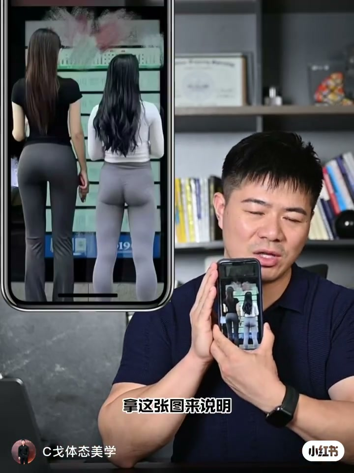
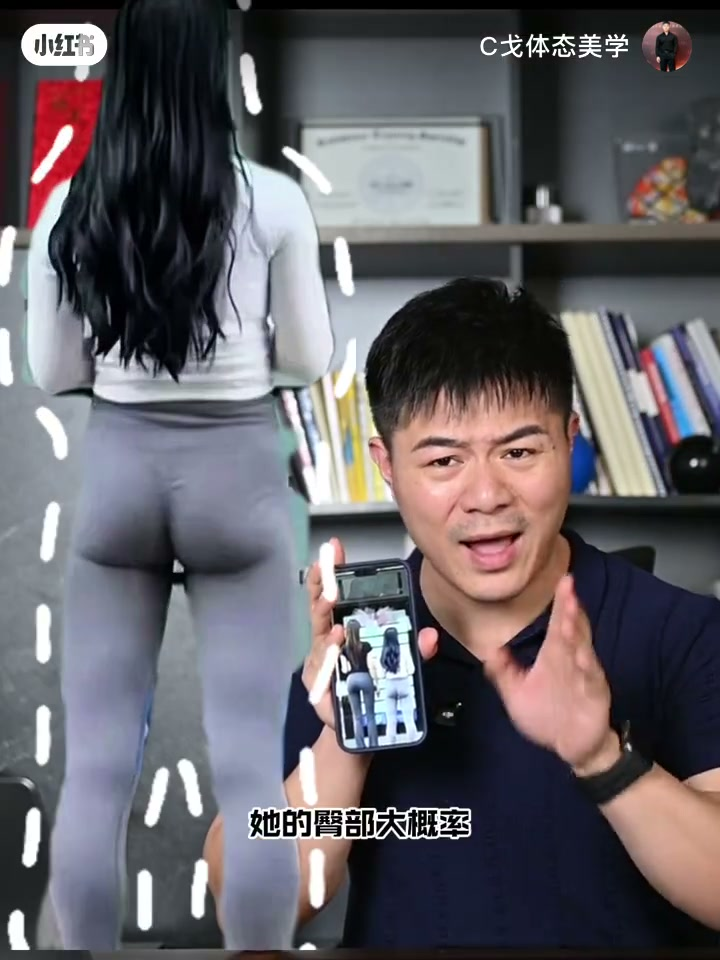
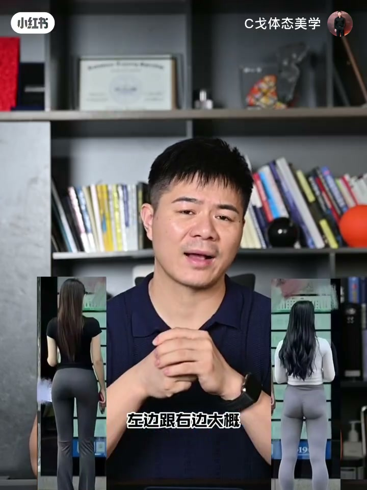
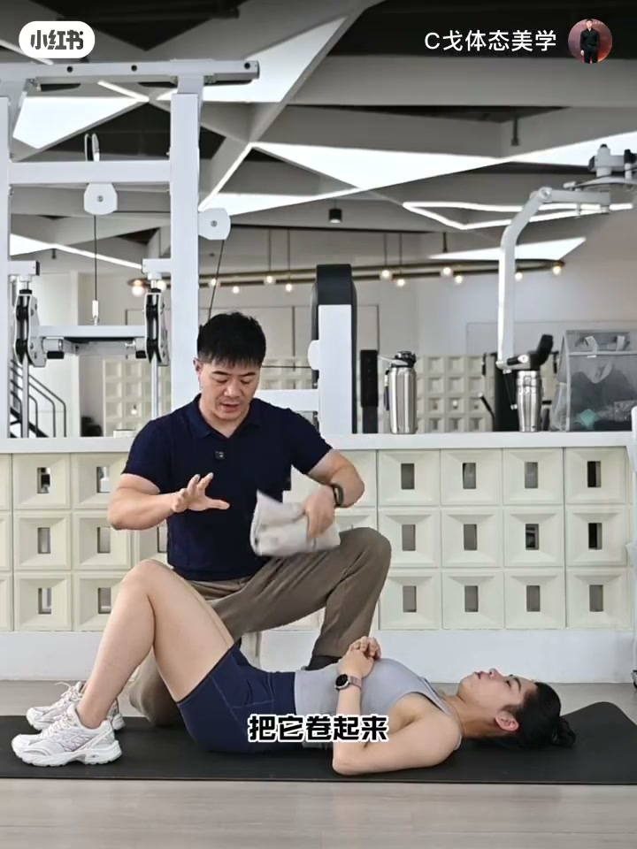
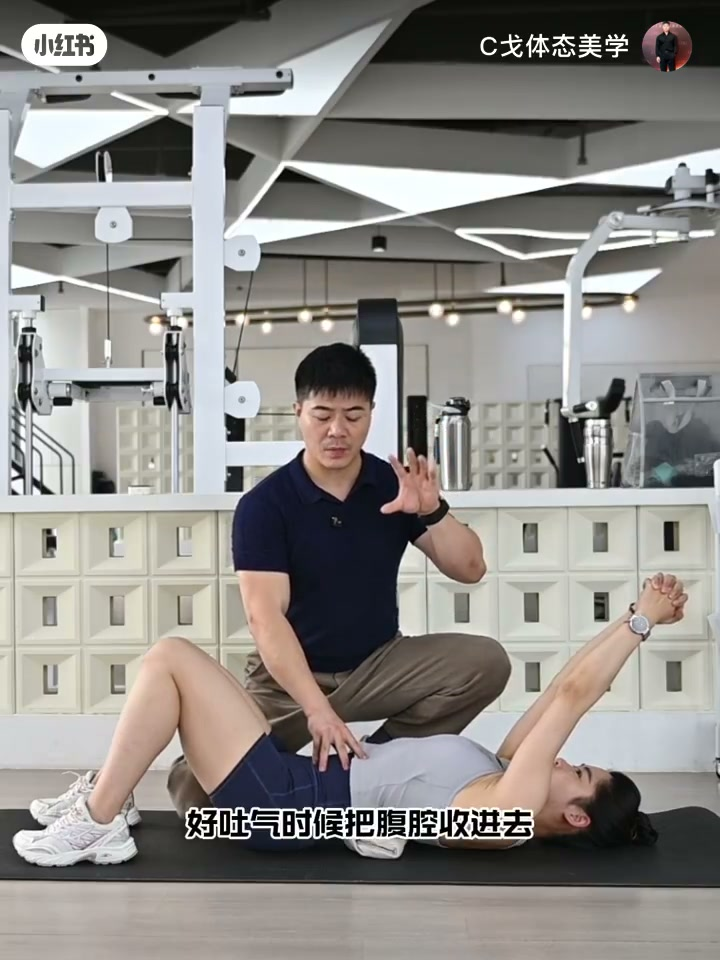
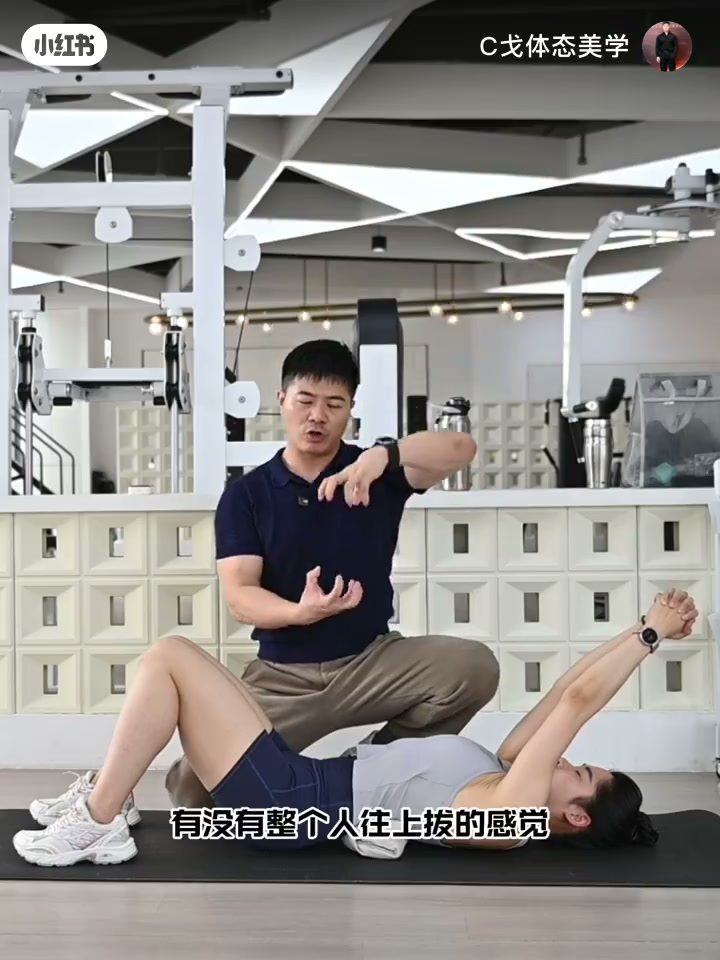

内容要点
知识结构
很多人拿这张背影对比图说明「健身跟不健身」；作者当场否决——右边姑娘有健身痕迹，臀部大概率练出来且练得不错。
第一点天赋比例（略过）；第二点也是最大区别是体态。除去凹造型与修图，右边上段腰椎变直后仰、髋深层不稳、骨盆前移，臀显凹陷、腿显短；作者现场演示左右体态差。
体系多年强调胸腰结合段。动作：毛巾卷起垫在下段肋骨正下方（高度一般 ≤3cm，不适则降低甚至暂不垫），双手抱拳上推再斜上 45°。
先吸气入腹腔，吐气收腹并保持收紧；再慢吸满胸腔（向前少、向两旁多，吸到中下段肋骨），全程腹腔不松。建议吸气 ≥8 秒，10–15 次呼吸为 1 组，做 4–6 组。
起来后感受腰椎是否往上拔、腰腹以下是否有支撑；多练必然可以、少练反而不行。收尾批评职业教练/瑜伽普拉提/康复师的无逻辑点评，并邀请线下课堂深耕。
对比图看的不是「有没有健身」，而是体态链条是否立住；日常可用胸腰结合段垫巾 + 腹腔负压呼吸，把腰曲与躯干支撑找回来。
图文实录
开场：别拿这张图说「健身 vs 不健身」
作者举起手机，画面左侧放大两名女性背影对比图。他开门见山：最近很多人用这张图说明健身跟不健身的区别——「别闹了好吗，别瞎说好吗」。仔细看右边姑娘，并非没有健身痕迹；臀部大概率是练出来的，而且练得还不错。因此结论很硬：这不是健身不健身的区别。


真正拉开差距的是体态
作者给出自己的观点分层：第一点是天赋比例——「这一点不用说了，没有意义」；第二点、也是最大的区别，其实是体态。当然要除去凹造型和修图因素。他描述右边女孩：上段腰椎变直向后，身体看起来「坨坨的」；髋关节深层不稳定，骨盆向前移动，臀部显得凹陷，并显腿短、身形不好看。
随后他请人现场演示：左边与右边大概体态就有这样的区别——把口播里的链条落到可见对照上。

怎么练：胸腰结合段垫巾，建立腰曲与负压
「怎么练习？敲重点：建立腰曲。」作者强调，他们体系从十几年前就开始强调胸腰结合段在整个人体态调整中的重要性。接下来分享的动作，能同时建立腰曲与腹腔负压。
道具很家常：找一块软垫子，家里可用毛巾卷起排好，垫在胸腰结合段——也就是下段肋骨的正下方。垫子高度一般选择三厘米以下；身体较柔软可稍高，若垫上腰不舒服就选低一点甚至先不垫，再逐渐垫高。

摆好垫子后：双手抱拳往天上推，再往斜上方 45 度——把肩胛与胸廓打开，为后续呼吸留出空间。
呼吸细节：全程腹腔收紧，胸腔慢吸满
做到上推姿势后，先吸气到腹腔；吐气时把腹腔收进去，并保持腹腔收紧。在收紧前提下慢慢吸气，吸满整个胸腔。作者把胸腔吸气方向拆成两个：向前、向两旁——「两旁多一点，向前少一点」，吸到中下段肋骨、吸满，再慢慢吐气；全程腹腔不松。

剂量建议：10 到 15 次呼吸为一组，做 4 到 6 组。做完起来看看身体——从腰椎那边开始，有没有整个人往上拔的感觉；整个腰腹以下有没有支撑感。有的话请每天多多练习。「这个东西没有量的」：好多人问「多练习不行吗」——多练习必然可以，少练习反倒不可以。

收尾：对职业点评的提醒
作者把矛头转向行业习惯：如果到今天，作为职业教练、瑜伽老师、普拉提老师、康复师，还在进行不加思索、毫无逻辑的点评与分析甚至传播——「你不觉得这件事情可以再去提升一点吧」。他欢迎听众来到线下专业技术课堂做深度提升，以此收束。